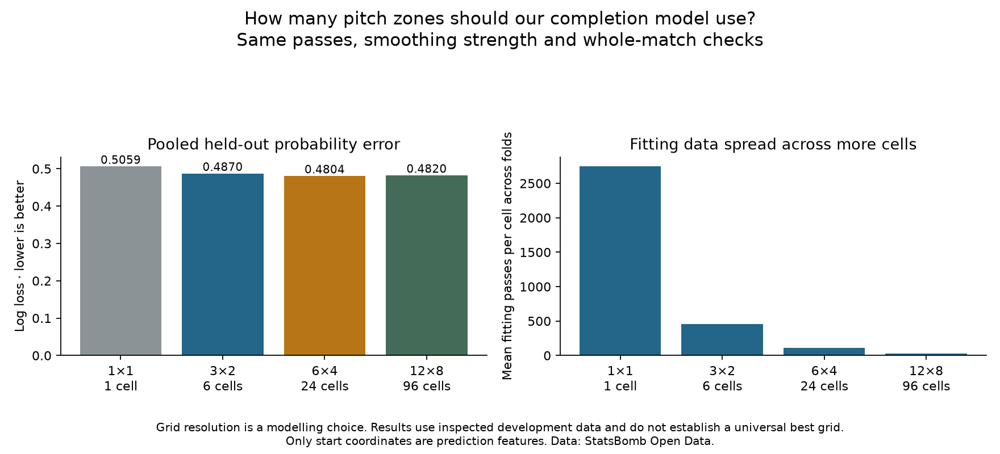

Football analyst training · Phase 3 · Lesson 52
Are smaller pitch boxes better?
You asked why we used 24 zones. We now test that modelling choice against coarser and finer grids.
Completed assignment
- One box: log loss 0.5059.
- Six boxes: 0.4870.
- 24 boxes: 0.4804.
- 96 boxes: 0.4820.
Same passes, match checks and smoothing setting; lower error is better.

Why?
Large boxes lose location detail. Small boxes give more detail but fewer training passes per group. This is a tradeoff to test; it does not establish the exact cause of each observed error.
These results do not identify a universal best grid. They reuse inspected development matches, and the 24-versus-96 difference is small. We have not changed the original model.
Run 52_completion_grid_resolution.py in Spyder. grid_cell() maps each starting point using the candidate dimensions. The worked assignment is complete with assistance; ask for more detail if needed.